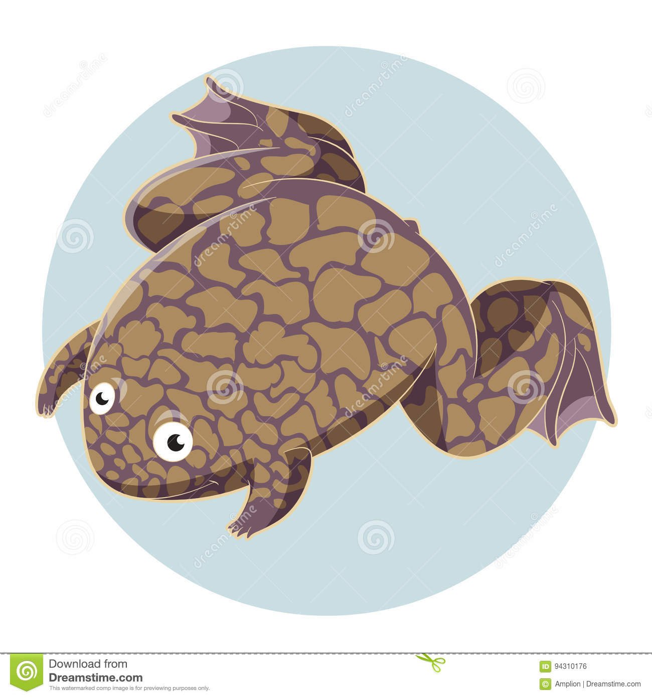
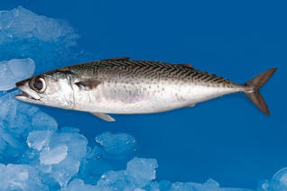

XENOPUS
Xenopus es un género de ranas carnívoras de la familia Pipidae naturales del África subsahariana (y un registro aislado en el noroeste de Chad). Son todas acuáticas, con las plantas de las patas palmeadas, al contrario de los dedos, que no lo son, y con tres uñas alargadas a modo de garra en tres dedos de cada pata trasera.

XARDA
La caballa o verdel, también llamada xarda y sarda (Scomber scombrus) es una especie de pez perciforme de la familia Scombridae. La caballa es un pez teleósteo perteneciente a la familia de los escómbridos, orden Perciformes. Abunda en el océano Atlántico y en el mar Mediterráneo, donde es objeto de una intensa pesca debido a su apetecible carne.